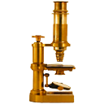

ImageJ: Images & pixels
Contents
ImageJ: Images & pixels#
Introduction#
This is the first section that takes the ideas described in the main chapter and shows how they relate to software: in this case ImageJ.
We begin with a brief introduction to what ImageJ is, how to get it, and how to navigate the interface to open and display images.
What is ImageJ?#
ImageJ is open-source software for image analysis.
Created by Wayne Rasband at the National Institutes of Health, ImageJ has become indispensable to the research community over more than 20 years. It continues to be updated regularly and is by far the most discussed topic on the Scientific Community Image Forum – with more than 10,000 topics at the time of writing, and more added every day.
ImageJ’s success is due not only to the features of the software itself, but to its openness and extensibility. The source code is in the public domain, meaning that others can adapt it as needed. But usually this isn’t necessary, because users can write (and share) custom macros, plugins or scripts to add new functionality – without changing ImageJ itself.
I personally have found ImageJ phenomenally useful throughout my career, to the extent that I am convinced that anyone working with biomedical images benefits if they know how to use it. Even if you ultimately use other software for your analysis, or even write your own, the ability to quickly check things in ImageJ is extremely helpful.
These sections are intended to help any interested reader develop a strong working knowledge of ImageJ itself, while simultaneously gaining a deeper understanding of image analysis in general.
Getting ImageJ#
ImageJ is available in multiple forms. Three of the most important ones for our purposes are:
1. ImageJ#
{kind=link}
Download from https://imagej.nih.gov/ij/
The ‘original’ download of ImageJ contains all the core functionality, but no extra user plugins.
The core of the application is a tiny file ij.jar (~2.5 MB) that runs on Java. You can download a platform-specific package that includes both ImageJ and Java for Windows, Mac or Linux. Including Java makes the download bigger, but makes the application self-contained and easy to run.
2. Fiji#
Download from https://fiji.sc/
Fiji, which stands for Fiji Is Just ImageJ, is a distribution of ImageJ that comes bundled with a plethora of plugins and extra features that are especially useful for life scientists. It also has a powerful script editor that helps a lot when developing macros or scripts, an updater to help manage all the additions, and even a ‘Big Data Viewer’ for particularly huge images.
3. ImageJ.JS#
Run at https://ij.imjoy.io
ImageJ.JS is a web version of the original ImageJ, capable of running in a browser. It has a few extra features, but not as many as Fiji. It was put together and is maintained by the ImJoy team led by Wei Ouyang.
For more information, see https://imagej.net/software/imagej-js
More interactivity with ImageJ.JS!
Whenever you see a button like this
 it can be used to launch ImageJ.JS directly from this book, often with a relevant image opened.
it can be used to launch ImageJ.JS directly from this book, often with a relevant image opened.
By default, ImageJ.JS will open in the same browser tab. If you want it to open in a new tab, then there’s probably an easy trick in your browser to do that (on a computer, my guess is that it’ll be pressing Ctrl or ⌘ when clicking the link).
Which ImageJ do I choose?
I would say: all of them. I always install both ImageJ and Fiji on any computer I will use regularly. ImageJ.JS doesn’t require any installation: just a modern web browser.
Everything ImageJ can do can also be accomplished in Fiji (because Fiji contains the full ImageJ inside it), but the converse is not true (because Fiji contains many extra bits) Therefore Fiji is my first choice for more extensive analysis tasks. Its main disadvantage is that it’s a lot bigger: taking longer to start up and run update checks, and containing a lot of commands that I don’t always need.
By contrast, the original ImageJ is very small and lightweight. On my computer, it starts almost instantly. It remains my first choice for quick, common tasks with images.
Most ImageJ-related practicals in this course only use core features, and so can be done using any of ImageJ, Fiji or ImageJ.JS. Sometimes in this book I will refer to explicitly to Fiji, indicating that the relevant command is only available in Fiji.
Remember to cite the software you use!
A lot of open-source software is developed and supported by academics, who invest a huge amount of time into development and support. They need funding to continue that work1, and paper citations to help get that funding.
If you use software for research you plan to publish, please spend a few minutes searching for how the developers of the software want it to be cited.
For ImageJ & Fiji, see https://imagej.net/contribute/citing
For other software, search for citing [software name]
The ImageJ Interface#
ImageJ’s user interface is rather minimalistic. It’s centered around a toolbar. Everything else (images, histograms, measurement tables, dialogs) appears within separate windows.
{kind=link}
Fig. 6 The main ImageJ user interface.#
But despite the simple appearance, ImageJ is powerful. The depth of the software is evident from its abundance of menus and submenus.
Which leads to the most important tip for using ImageJ:
Don’t memorize the menus – search!
ImageJ has a lot of options, buried in a lot of menus… and submenus… and sometimes sub-submenus.
Fortunately, there’s no reason to memorize where they all are to be found. Rather, just remember one shortcut key: L
Pressing L effectively brings up at list of all the commands from the menus, ready for each search.
For ImageJ, you see the Command Finder window where you can begin to type the name of the command you want. You can then run it either by double-clicking on the entry, or by using the up or down arrow keys followed by Enter.
{kind=link}
Fig. 7 The Command Finder dialog#
In Fiji, you might see the Command Finder or you can alternatively switch on a search bar by selecting it under . The idea is the same. The search bar can also be activated using L and used to find and run commands.

Fig. 8 dialog#
Losing control
In most software, shortcut keys often requires pressing Ctrl (on Windows, Linux) or ⌘ (Mac). Therefore the shortcut to search for a command would be Ctrl + L or ⌘ + L.
This works in ImageJ, but isn’t necessary. Under , you can specify whether the Ctrl or ⌘ key is needed along with the letter for the shortcut.
By default, this option is turned off – so pressing L alone is enough. You may find this might make it too easy to accidentally run commands, in which case you should select the option to turn it on.
Opening images & viewing pixels#
I am always taken aback when I see someone open an image in ImageJ through the menus, by choosing .
Although this can work, it’s unnecessarily slow and awkward. The more elegant way to open an image is to simply drag the image file onto ImageJ’s toolbar.
As the cursor is then moved over the image, the value for the pixel under the cursor is displayed in ImageJ’s status bar. Images can be navigated as follows:
Zoom in
Select the tool, then left-click on the image, or
Press the + key
Zoom out
Select the tool, then right-click on the image, or
Press the - key
Pan
Select the
 tool, then click and drag on the image, or
tool, then click and drag on the image, orPress the spacebar, then click and drag on the image
When the image is larger than the visible region, a small (purple) overview appears in the top left to indicate which part can currently be seen.
The status bar also shows the x and y coordinates for the pixel under the cursor. However, to interpret these you need to know the origin, i.e. the location of the pixel at x=0, y=0.
Where is the origin of the image in ImageJ?
Top left corner
Top right corner
Bottom left corner
Bottom right corner
Image center
Tip: You should be able to answer this question by opening an image in ImageJ, and observing the coordinates in the toolbar as you move the cursor over the image.

The origin of the image is at the top left, i.e. the top left pixel is identified with the coordinate x=0, y=0.
Changing appearance#
Adjusting Brightness & Contrast#

Fig. 9 Brightness/Contrast dialog#
The main command to change the brightness of an image is . Since you’re likely to use it a lot, it is worth learning the shortcut: Shift + C.
The Brightness/Contrast dialog has four sliders: Minimum, Maximum, Brightness & Contrast. They are linked together: changing either of the first two also results in a change to the last two, and vice versa.
Supposing you have a grayscale LUT, with colors ranging from black to white, you should see that
All pixels with a value less than or equal to the Minimum will be shown as black
All pixels with a value greater than or equal to the Maximum will be shown as white
All other pixels with a value in between will be shown using a shade of gray
Use the minimum & maximum sliders
Despite the name of the command implying Brightness and Contrast are the star perfomers, I would argue that the Minimum and Maximum sliders are far more intuitive.
I use Minimum and Maximum almost exclusively.
Does adjusting any of the sliders in the brightness & contrast dialog change the pixel values or only the LUT?
What happens if you press Apply?

Adjusting the sliders changes the LUT – and not the pixel values.
That is, unless you press Apply. If you do press Apply then the pixel values are changed.
Recent versions of ImageJ give a warning when pressing Apply, but previous versions did not… which made it an extremely dangerous button for new users of the software. In most cases, the rule is:
Tip
When adjusting the brightness & contrast in ImageJ, don’t press Apply!
You shouldn’t break this rule without a good reason!
Switching LUTs#
You can change the colors of the LUT by selecting an alternative option from the submenu.
Use the Control Panel to frequently access the same menu
If you want to explore LUTs quickly, use . This opens a window that allows you to double-click on commands from any menu or submenu to apply that command quickly.
- 1
Sometimes they also need a kind word or a compliment, because they are human. Supporting software can be time-consuming, hard and stressful – and is usually something they do for free, in their limited spare time.